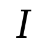

There are three types of text available:
- System text, generally used for tempo indications, and appearing at the top of the system.
 - Expression text, written in italics, and applied to individual staves.
- Rehearsal Marks, enclosed in a box, and appearing at the top of the system
Select whichever of these you want, and tap in the score to apply them.
A dashed line can be added to the text (eg for a crescendo) - select the button, enter the text, then long press in the score to start the selection, and tap where the end of the line should go.
To delete text, select the eraser key and tap on the text to be removed.